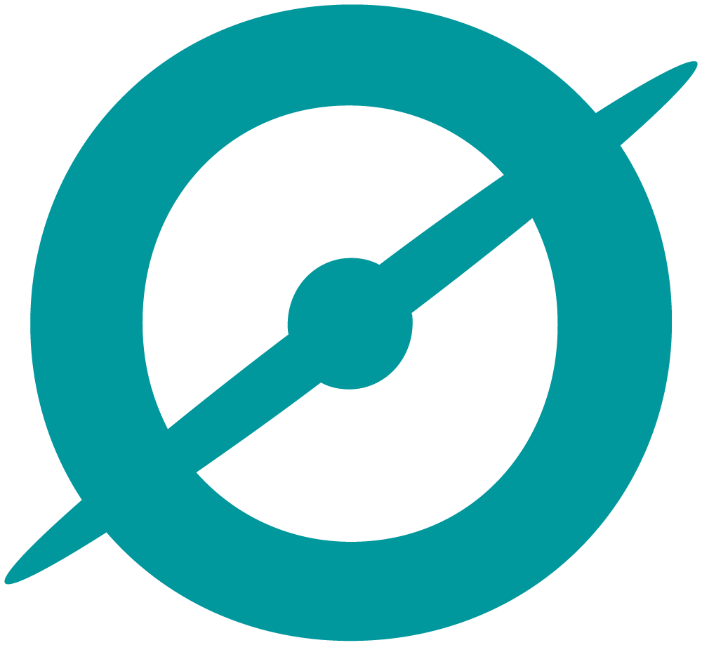

Santiago González Pérez
Gestor de la información y contenidos digitales (especializado en archivística y biblioteconomía)
Interesado en LAM (Bibliotecas, Archivos y Museos), humanidades digitales, desarrollo web y documentación
Actualidad
Actualmente me encuentro estudiando y preparando oposiciones, a lo que habría que añadir el aprendizaje autodidacta de diferentes tecnologías web y áreas del conocimiento de mi interés, así como el desarrollo de proyectos personales.
Todo ello lo compagino con la investigación principalmente de temas sobre archivística y biblioteconomía, reflejada en la publicación de ocasionales artículos y realización de ponencias en congresos, jornadas y simposios.
Puede usted consultar la totalidad de mis publicaciones y participaciones académicas en la página "Académico" de mi sitio web.
Background
En adición a la gran cantidad de diversos proyectos que he realizado durante mis estudios universitarios,
en el pasado he ejercido profesionalmente como asistente técnico del servicio de atención al cliente de la herramienta de archivo electrónico en ODILO.
Además, en el marco de mis prácticas curriculares he desempeñado labores archivísticas, de desarrollo web y creación de contenidos multimedia para proyectos propios del Archivo General de la Región de Murcia.
De entre ellos destacar el desarrollo íntegro de la página web para su jornada de archivística "Archivos en abierto" o la creación del proyecto digital de participación ciudadana "Testamentos de Murcia" ↗, basado en la descripción online y colaborativa de dicha clase de documentos.
Tecnologías
Estas son las principales tecnologías que he usado para desarrollar mis proyectos, tanto pasados como futuros:



Servicios
De forma individual e independiente ofrezco los siguientes servicios digitales:
◆ Páginas web personales
◆ Proyectos digitales de participación ciudadana/ciencia colaborativa
◆ Revistas electrónicas
◆ Contenido multimedia para redes sociales
Si está interesado en obtener más información o contratar alguno de mis servicios no dude en ponerse en contacto conmigo a través de mi correo electrónico (gonzalezperezsantiago0@gmail.com).